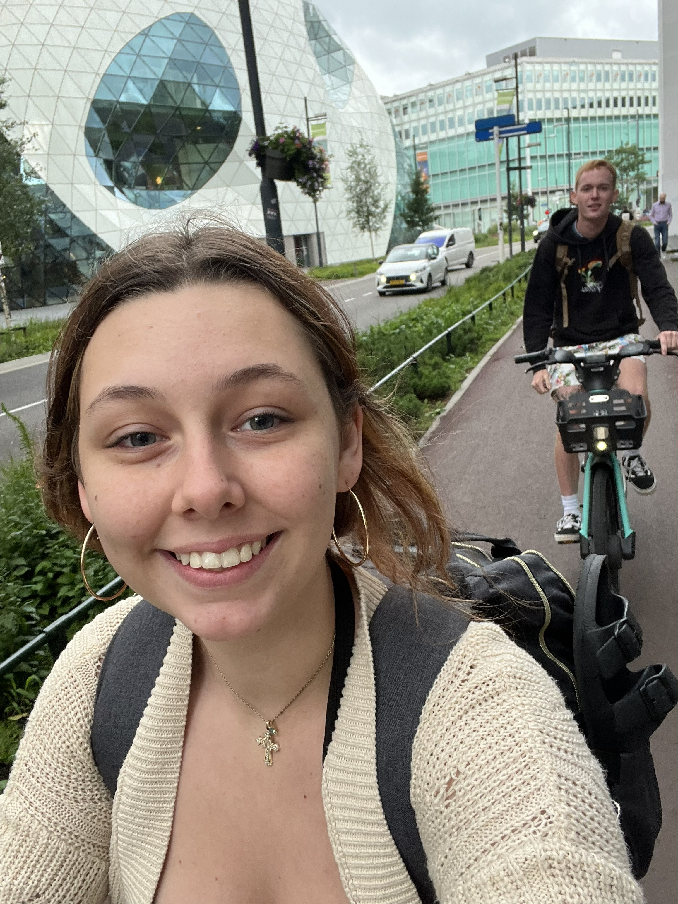
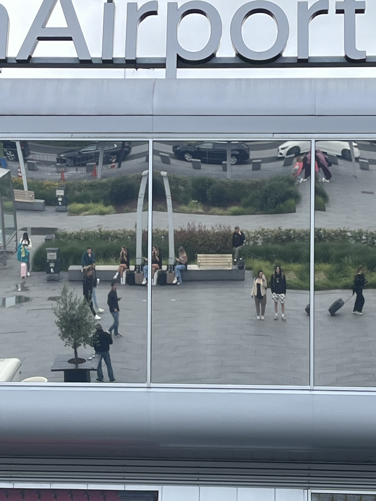

The quick snapshot
Stay details
Hotel / Airbnb
Area: Eindhoven
What I liked: Because it was only a day trip, everything felt light and easy. By this point in the trip, we had really mastered getting around with the backpacks and the bikes made it even easier. The abstract hope that the day would work itself out was enough to get us through and it unfolded quite nicely. I honestly felt like one day was plenty.
What I didn’t: If anything, I wish we had given ourselves a little more time to see what the city felt like after dark.
Booking notes
- Trip type: Day trip
- Best for: A flexible one-day stop where you want to wander, bike, eat something good, and keep the schedule loose.
- Good to know: The city was super easy to move through without needing a car.
Getting there
Travel: Flew in from Vilnius
Travel cost: $32.00 per person, ($64.00 total)
Arrival notes: Arrival was easy, and the public transportation felt simple right away. We did have to go through customs and the gate agent was pretty indifferent about our travel plans. He asked where we came from and where we were going so I started to tell him about our European Tour plan and that I thought Aiden was planning on proposing on the trip. He stopped me halfway through to tell me he didn't actually care, and asked if I had anything in my bag that I wasn't supposed to. For reference, I was correct and Aiden proposed three days later. Once we got out of the airport we hopped onto a tram and rode into the city. After that, we walked to the bowling pins and grabbed some bikes. There were rental bikes everywhere, which made the whole city feel extra accessible and fun to move through. The architecture was, admittedly, spectacular and it was quite a colorful city despite the rain.

Dutch people go with bikes like Frenchies go with cigarettes.

Some pretty cool architecture pictured behind us. Seriously, biking was so. fun.

Can you spot us? The giant mirror wall on the airport allowed for a pretty cool picture opportunity.
Where we ate and what we ordered
What we did, day by day
Day 1
Date: July 12, 2024
Main plan: Arrive in Eindhoven, take the bus through the city, hop on electric bikes near the bowling-pin structure, and ride into the city center to explore.
Best part: Biking around the city was easily the highlight. It made Eindhoven feel playful, easy, and very much itself. There is something so fun about landing somewhere brand new and almost immediately moving through it on two wheels like you belong there.
Worth repeating? Absolutely
Little moments I do not want to forget
Memory: The weather was a little gloomy, but it somehow worked with the city instead of against it. The people felt a bit standoffish at first, but still generally kind, and the whole day ended up feeling much warmer than we figured it would.
Why it mattered: Eindhoven surprised me by being more fun and more charming than I expected. It reminded me that not every travel day has to be loud, packed, or dramatic to be worth keeping.
Worth keeping? Definitely